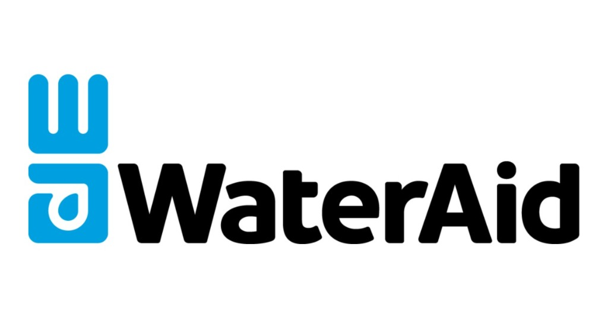

Professional Internships
Beyond campus activities, I gained professional exposure through an internship project with WaterAid Pakistan and MeraMaan Organization. These opportunities allowed me to engage with development-oriented communication and teamwork.

Working with these organizations provided me with a broader perspective on how communication can be used to drive social change. I learned to collaborate with diverse teams and apply my linguistic skills to real-world challenges, reinforcing my commitment to impactful work.